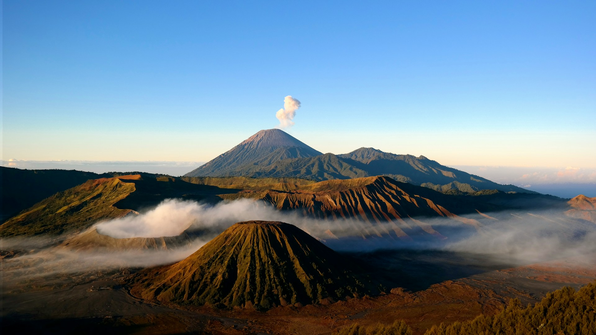

<section
  class="relative h-screen w-full flex items-center justify-center overflow-hidden bg-slate-900"
>
  <div class="absolute inset-0 z-0 overflow-hidden">
    

    <video
      id="hero-bg-video"
      loop
      muted
      playsinline
      class="absolute inset-0 w-full h-full object-cover opacity-0 transition-opacity duration-1000 ease-in-out z-0"
    >
      <source src="../../../assets/raw.mp4" type="video/mp4" />
      Browser Anda tidak mendukung tag video.
    </video>

    <div
      class="absolute inset-0 bg-gradient-to-b from-slate-900/40 via-slate-900/20 to-slate-900/90 z-20"
    ></div>
  </div>

  <div
    class="relative z-30 w-full max-w-7xl px-6 mx-auto text-center flex flex-col items-center"
  >
    <div class="mb-6 overflow-hidden">
      <span
        class="inline-block text-blue-200/80 text-xs md:text-sm font-bold tracking-[0.3em] uppercase border border-white/20 px-4 py-2 rounded-full backdrop-blur-sm animate-fade-in-up"
      >
        The Ultimate Journey
      </span>
    </div>

    <h1
      class="text-7xl md:text-9xl font-serif font-medium text-white mb-6 tracking-tighter leading-none drop-shadow-lg animate-fade-in-up"
      style="animation-delay: 0.1s"
    >
      Eksplora<span class="text-blue-500">.</span>
    </h1>

    <p
      class="text-lg md:text-2xl text-slate-200 mb-10 font-light font-sans tracking-wide max-w-2xl mx-auto leading-relaxed opacity-90 animate-fade-in-up"
      style="animation-delay: 0.2s"
    >
      Temukan kepingan surga tersembunyi dan rasakan
      <span class="font-serif italic text-white">keajaiban</span> nusantara.
    </p>

    <div
      class="flex flex-col md:flex-row gap-5 items-center justify-center animate-fade-in-up"
      style="animation-delay: 0.3s"
    >
      <a
        href="#destinasi"
        class="group relative px-8 py-4 bg-white text-slate-900 overflow-hidden transition-all duration-300 hover:bg-blue-50"
      >
        <div
          class="absolute inset-0 w-0 bg-blue-100 transition-all duration-[250ms] ease-out group-hover:w-full"
        ></div>
        <span
          class="relative flex items-center gap-3 font-serif font-bold italic text-lg tracking-wide"
        >
          Mulai Petualangan
          <svg
            class="w-4 h-4 transition-transform group-hover:translate-x-1"
            fill="none"
            stroke="currentColor"
            viewBox="0 0 24 24"
          >
            <path
              stroke-linecap="round"
              stroke-linejoin="round"
              stroke-width="2"
              d="M17 8l4 4m0 0l-4 4m4-4H3"
            ></path>
          </svg>
        </span>
      </a>

      <button
        id="btn-watch-video"
        class="px-8 py-4 border border-white/30 text-white hover:bg-white/10 hover:border-white transition-all duration-300 backdrop-blur-sm cursor-pointer"
      >
        <span class="font-sans font-medium tracking-wide text-sm uppercase"
          >Tonton Video</span
        >
      </button>
    </div>
  </div>

  <div
    class="absolute bottom-10 left-1/2 transform -translate-x-1/2 flex flex-col items-center gap-2 animate-fade-in-up z-30"
    style="animation-delay: 0.5s"
  >
    <span class="text-[10px] uppercase tracking-[0.2em] text-white/50"
      >Scroll</span
    >
    <div
      class="w-[1px] h-12 bg-gradient-to-b from-white/80 to-transparent"
    ></div>
  </div>
</section>
